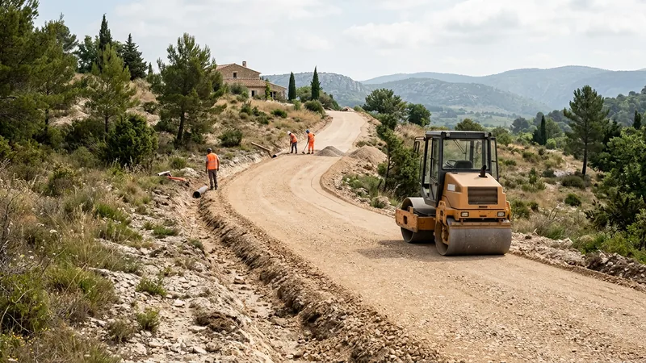

Chemin d'accès carrossable : prix, structure et portance

Un chemin d'accès n'est pas une allée de garage plus longue. Une allée fait 10 à 30 mètres, reçoit deux voitures par jour et se termine devant une maison. Un chemin d'accès fait 80, 200 ou 600 mètres, traverse un terrain en pente, doit supporter un camion de livraison, une toupie à béton de 26 tonnes et, en Provence, le passage d'un véhicule de lutte contre l'incendie. Les deux ouvrages n'ont ni la même structure, ni le même prix au mètre carré, ni les mêmes contraintes de drainage.
C'est la raison pour laquelle un chemin d'accès traité comme une allée finit systématiquement en ornières au bout de deux hivers : la couche de forme est trop mince, l'eau n'a pas d'issue, et la première toupie fait le reste. Ce guide donne la structure réelle selon ce qui va rouler dessus, les prix au mètre linéaire pratiqués dans les Bouches-du-Rhône en 2026, et les erreurs qui coûtent le plus cher.
Chemin d'accès, voie carrossable, piste : de quoi parle-t-on ?
Les trois mots désignent des ouvrages différents, et confondre les termes au moment du devis mène à des surprises :
- Le chemin d'accès privé dessert une ou plusieurs habitations depuis la voie publique. Il doit rester praticable toute l'année, y compris par un véhicule de secours.
- La voie carrossable est un terme plus large : toute voie dimensionnée pour recevoir un véhicule, y compris une desserte de bâtiment agricole ou de local technique.
- La piste — piste forestière, piste DFCI — est un ouvrage non revêtu, dimensionné pour un usage occasionnel et entretenu par passages de niveleuse. Sa structure est plus légère, son prix au mètre nettement plus bas, mais elle n'accepte pas un trafic quotidien.
Dans la pratique, ce qui fixe le prix n'est jamais le nom mais trois paramètres : la charge la plus lourde qui passera, la nature du sol en place, et la pente.
La structure : c'est ce qu'il y a dessous qui tient
Un chemin d'accès est un empilement. La couche visible ne fait que protéger celle du dessous ; c'est la couche de forme qui reprend les charges et les répartit sur le sol naturel. La dimensionner correctement est la seule économie durable du chantier.
| Usage | Couche de forme | Couche de roulement | Total décapé |
|---|---|---|---|
| Piste, usage occasionnel | 20 cm de grave 0/80 | 8 cm de grave 0/31,5 | 30 cm |
| Accès maison, 2 à 4 véhicules/jour | 30 cm de grave 0/80 | 10 cm de grave 0/20 | 40 cm |
| Accès avec livraisons, toupie, camion | 40 cm de grave 0/80 | 12 cm de grave 0/20 ou enrobé | 55 cm |
| Sol argileux ou humide | + géotextile anticontaminant + 10 cm | identique | + 10 cm |
Le géotextile est le poste le moins cher et le plus rentable du chantier : 2 à 4 €/m² posé. Sans lui, sur un sol argileux, les cailloux de la couche de forme s'enfoncent progressivement dans l'argile et la structure perd son épaisseur utile en trois ou quatre ans. Avec lui, elle la garde. Sur les terrains argileux du bassin d'Aix, c'est un réflexe, pas une option.
Un point que peu de devis précisent : la grave doit être compactée par couches de 20 cm maximum. Déverser 40 cm et passer le compacteur une fois donne un résultat compact en surface et meuble en profondeur — exactement ce qui produit des ornières localisées l'hiver suivant.
La pente : la contrainte qu'on découvre trop tard
Une voiture de tourisme monte sans difficulté jusqu'à 15 %. Au-delà, l'adhérence sur une surface en grave devient aléatoire par temps humide, et c'est le revêtement qui doit changer, pas la structure.
- Jusqu'à 10 % : grave compactée sans réserve.
- De 10 à 15 % : grave compactée acceptable, mais un revêtement lié (bicouche ou enrobé) évite le ravinement de la couche de surface à chaque orage.
- De 15 à 20 % : revêtement lié nécessaire. L'enrobé se pose encore, à condition que le finisseur puisse monter.
- Au-delà de 20 % : béton balayé ou béton désactivé avec striage transversal. L'enrobé flue lentement sous son propre poids en plein été.
Pour les véhicules de secours, le référentiel départemental impose en général une pente maximale de l'ordre de 15 % et une largeur libre de 3 mètres. Si votre chemin dessert une construction neuve, cette contrainte est examinée à l'instruction du permis : c'est le moment de la traiter, pas après.
Le drainage : ce qui détruit les chemins, c'est l'eau
Un chemin d'accès bien structuré mais mal drainé se dégrade plus vite qu'un chemin léger bien drainé. L'eau qui stagne dans la couche de forme ramollit le sol support ; le passage d'une charge sur un support ramolli crée l'ornière. Trois dispositions suffisent dans la grande majorité des cas :
- Le dévers : 2 à 3 % en travers, vers l'aval. C'est gratuit, cela se règle au moment du réglage final, et c'est ce qui manque le plus souvent.
- Le fossé de rive côté amont, qui intercepte le ruissellement du terrain avant qu'il n'atteigne la chaussée.
- Les traversées : une buse ou un caniveau à grille tous les 40 à 60 mètres sur un chemin en pente, pour couper la lame d'eau avant qu'elle ne prenne de la vitesse. En Provence, c'est le dimensionnement sur l'orage rare qui compte, pas sur la pluie moyenne.
Prix d'un chemin d'accès carrossable en 2026
Le prix se raisonne au mètre linéaire plutôt qu'au mètre carré : c'est la longueur qui commande le terrassement, le drainage et les rotations de camions. Les fourchettes ci-dessous correspondent à une largeur courante de 3 mètres, dans les Bouches-du-Rhône, décapage et évacuation compris.
| Type de chemin | Prix au m² | Prix au mètre linéaire | Pour 150 m |
|---|---|---|---|
| Piste en grave, usage occasionnel | 18 à 28 € | 54 à 84 € | 8 100 à 12 600 € |
| Chemin en grave compactée, accès maison | 25 à 40 € | 75 à 120 € | 11 250 à 18 000 € |
| Chemin en bicouche (gravillonnage) | 35 à 55 € | 105 à 165 € | 15 750 à 24 750 € |
| Chemin en enrobé | 45 à 75 € | 135 à 225 € | 20 250 à 33 750 € |
| Béton balayé (forte pente) | 70 à 110 € | 210 à 330 € | 31 500 à 49 500 € |
Ces prix sont plus élevés au mètre carré que ceux d'une allée de garage classique, et ce n'est pas une majoration commerciale : un chemin impose de déplacer les engins sur toute la longueur, de gérer le drainage, et souvent de travailler en terrain difficile d'accès. À l'inverse, la longueur amortit le déplacement : le prix au mètre carré d'un chemin de 300 mètres est plus bas que celui d'un chemin de 40 mètres.
Les postes qui font vraiment varier la facture
- L'évacuation des déblais. Décaper 40 cm sur 450 m² représente environ 180 m³, soit plus de 300 tonnes à sortir. Sur un chemin, c'est souvent le premier poste du devis. Si le terrain permet de régaler les déblais sur place, l'économie est immédiate : voyez notre guide sur le prix d'évacuation des gravats et déblais.
- La distance à la carrière. Un chemin de 150 m en structure 40+12 consomme de l'ordre de 300 tonnes de grave. À 25 kilomètres de la carrière plutôt qu'à 8, le surcoût de transport dépasse souvent 2 000 €.
- Le rocher. Un affleurement calcaire impose un brise-roche hydraulique, et le mètre cube décaissé change de catégorie de prix — voyez notre guide sur le terrassement en sol rocheux.
- Les réseaux. Si le chemin doit recevoir l'électricité, l'eau ou la fibre, faire passer les fourreaux pendant l'ouverture coûte une fraction de ce que coûtera la tranchée après coup.
Faut-il une autorisation ?
La création d'un chemin d'accès privé sur son propre terrain ne nécessite en général pas d'autorisation d'urbanisme tant qu'elle ne s'accompagne d'aucune construction et ne modifie pas substantiellement le relief. Trois situations changent la donne :
- Le débouché sur une voie publique relève d'une permission de voirie délivrée par le gestionnaire de la route (commune, métropole ou département selon le classement).
- En espace boisé classé ou en site protégé, les travaux sont encadrés et souvent soumis à déclaration préalable.
- Un terrassement important — talus élevé, remblai notable — peut relever de la déclaration préalable au titre de l'exhaussement ou de l'affouillement du sol.
Source officielle : la fiche officielle de la déclaration préalable de travaux.
Avant toute ouverture de tranchée le long ou sous le chemin, la déclaration de travaux auprès des exploitants de réseaux reste obligatoire ; le détail figure dans notre guide sur le prix d'une tranchée au mètre linéaire.
Entretenir un chemin pour ne pas le refaire
Un chemin en grave se comporte comme un ouvrage vivant. Deux gestes suffisent à doubler sa durée de vie : curer les fossés avant l'automne, et reprendre le réglage à la lame tous les deux à trois ans, avec un apport de 3 à 5 cm de grave 0/20 sur les zones creusées. Cette reprise coûte de l'ordre de 6 à 12 €/m², à comparer aux 25 à 40 €/m² d'une réfection complète.
Sur un chemin en enrobé, la surveillance porte sur les rives : c'est par le bord non soutenu que la dégradation commence presque toujours. Une bordure ou un accotement en grave bien compacté empêche l'effritement latéral.
Questions fréquentes
Quelle largeur pour un chemin d'accès carrossable ?
Trois mètres de largeur roulable constituent le standard pour une desserte d'habitation : c'est le minimum généralement demandé pour le passage des véhicules de secours et cela laisse la place à un utilitaire. Pour un croisement occasionnel, prévoyez des élargissements ponctuels à 5 mètres tous les 50 à 80 mètres plutôt qu'une largeur constante, nettement plus coûteuse. Comptez en plus 30 à 50 cm d'accotement de chaque côté pour tenir les rives.
Quel est le prix d'un chemin d'accès de 100 mètres ?
Pour une largeur de 3 mètres en grave compactée, comptez 7 500 à 12 000 € tout compris en 2026 dans les Bouches-du-Rhône, décapage, géotextile, structure et réglage inclus. En enrobé, la même longueur se situe entre 13 500 et 22 500 €. L'écart dans chaque fourchette dépend surtout de la nature du sol en place et de la distance à la carrière.
Peut-on faire un chemin carrossable en tout-venant ?
Le tout-venant non calibré coûte moins cher à la tonne, mais il se compacte mal parce que sa granulométrie est irrégulière et qu'il contient souvent trop de fines. Il convient pour un remblai de masse, pas pour une couche de roulement. Une grave concassée 0/31,5 ou 0/20, correctement compactée, tient deux à trois fois plus longtemps pour une différence de prix de l'ordre de 4 à 7 €/m².
Faut-il un enrobé ou une grave pour un chemin privé ?
La grave suffit si la pente reste sous 12 %, que le trafic est celui d'une habitation et que vous acceptez un reprofilage tous les deux ou trois ans. L'enrobé s'impose quand la pente ravine, quand le chemin est utilisé quotidiennement par plusieurs foyers, ou quand la poussière pose un problème. Le surcoût initial est de l'ordre de 60 à 90 % ; l'entretien, lui, devient quasi nul pendant quinze ans.
Comment éviter les ornières sur un chemin d'accès ?
Les ornières viennent presque toujours de l'eau, pas de la charge. Dans l'ordre d'efficacité : donner un dévers de 2 à 3 % pour que l'eau quitte la chaussée, poser un géotextile entre le sol et la grave sur les sols argileux, compacter la couche de forme par passes de 20 cm, et curer les fossés chaque année. Une structure surdimensionnée sur un chemin mal drainé donne toujours un moins bon résultat qu'une structure normale bien drainée.
Un chemin d'accès augmente-t-il la valeur d'un terrain ?
Sur un terrain enclavé ou difficile d'accès, oui, et nettement : un terrain desservi par un chemin carrossable praticable toute l'année devient constructible dans les faits, alors qu'un terrain accessible seulement en 4x4 l'été fait fuir les acquéreurs et les constructeurs. C'est aussi une condition pratique pour faire venir une toupie à béton, donc pour bâtir.
Un chemin d'accès à créer ou à reprendre ?
STP Terrassement crée et reprend les chemins d'accès privés dans les Bouches-du-Rhône. Nous chiffrons le décapage, la structure, le drainage et le revêtement dans le même devis, au mètre linéaire.
Pressé ? 07 45 14 20 49 ou WhatsApp